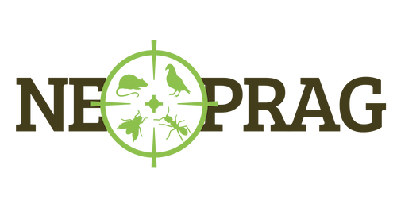

Site temporariamente fora do arEstamos temporariamente indisponíveis
Nosso site está passando por uma manutenção temporária e voltará ao ar em breve.
Agradecemos a compreensão.

Site temporariamente fora do arNosso site está passando por uma manutenção temporária e voltará ao ar em breve.
Agradecemos a compreensão.